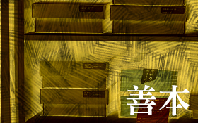

善本 ∕ 政大自1954年在台復校以來，積極徵集圖書以充實館藏，並陸續典藏來自陸軍財經學校、行政司法部、教育部圖書室及名人捐贈之明清古籍。 依據「國立政治大學圖書館特藏資料收錄作業原則」定義，清乾隆60年(1795年)以前之版刻列為善、清嘉慶至宣統年間(1796-1911年)列為古籍。 
特色資料：國關中心解密圖書 ∕ 本校國際關係研究中心早年設有圖書資料組，配合研究方向所需，主題偏重中國大陸、共產黨等研究議題，各類禁書或機密圖書文件由軍方管道進入台灣後，部分提供國關中心所典藏，成為一大特色，隨著時空背景轉換，該批資料陸續解密後，交由特藏中心典藏。